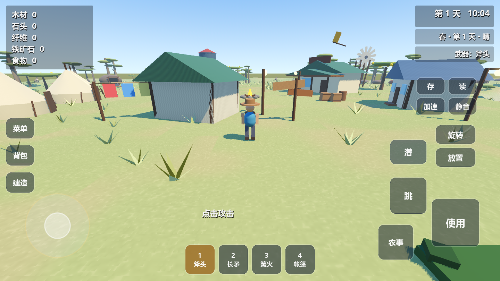
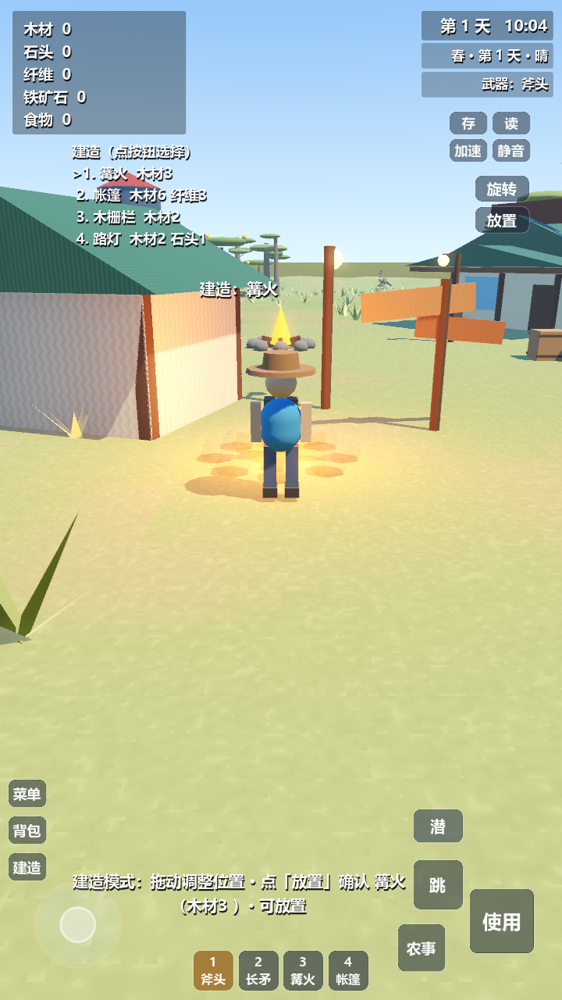
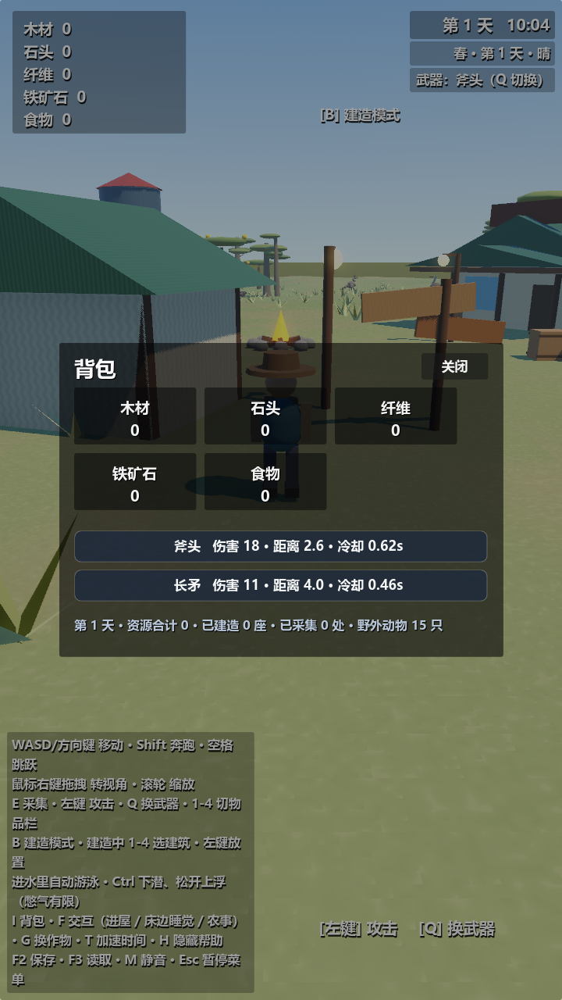
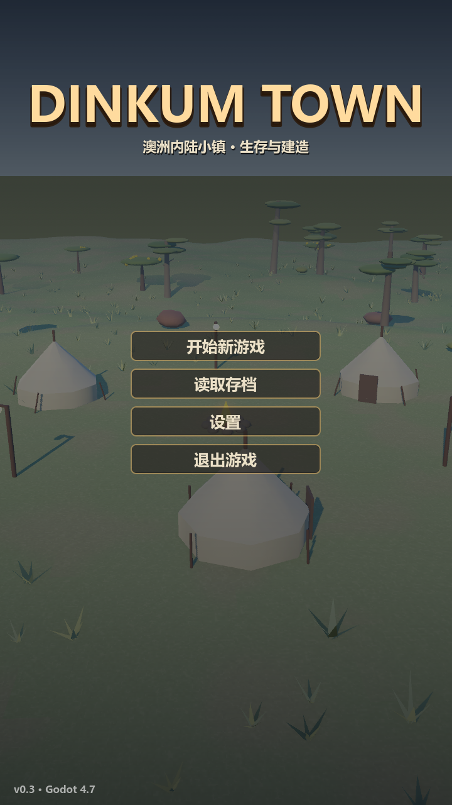

UI 文字与位置随分辨率调整
HUD、触控按钮、背包、主菜单、暂停、设置、存档和睡觉面板共用字体缩放规则。文字使用字重 700 的系统粗体，按屏幕短边放大；菜单同时受可用宽高限制。窗口缩放或横竖屏切换会实时重排，暂停时也会更新。
1907 项 UI 断言通过 · 9 种触控分辨率 bad=0
验证真实字体宽高、屏幕边界、资源文字在背景内、背包文字在格子内、长提示与建造菜单避让触控按钮，以及打开设置后旋转屏幕。游戏回归：物理 23/23、战斗 102/102、水域 37/37；室内与端到端检查均为 fails=0。
实际游戏截图








实测字号
以资源栏为例，字号依据短边变化；窗口越大，文字越大。
| 分辨率 | 资源栏字号 | 字体字重 |
|---|---|---|
| 1280×720 / 720×1280 | 19px | 700 |
| 1440×810 / 810×1440 | 22px | 700 |
| 1920×1080 / 1080×1920 | 29px | 700 |
| 2560×1440 / 1440×2560 | 39px | 700 |
| 3840×2160 | 58px | 700 |
复查入口
tools/ui_check.tscn 检查动态布局与字体；tools/touch_layout_check.tscn 检查触控占位；tools/ui_shot.tscn 在真实渲染窗口中生成横竖屏截图。截图脚本不能用 headless。
2026-10-05 · Godot 4.7.2 · Windows / RTX 5060 Laptop。测试使用隔离项目副本和固定地图种子 20260921；截图已人工核对。手机实机尚未验证，系统字体按设备可用字体回退。